材料 4個分
※粉量を変えると自動計算されます
生地
トッピング・仕上げ
作り方
生地
STEP 1
ホームベーカリーで生地を作る
ホームベーカリーに材料をセットして「生地コース」で生地を作ります。コースが終わったら、次の作業に進みます。
ホームベーカリーに材料をセットして「生地コース」で生地を作ります。コースが終わったら、次の作業に進みます。
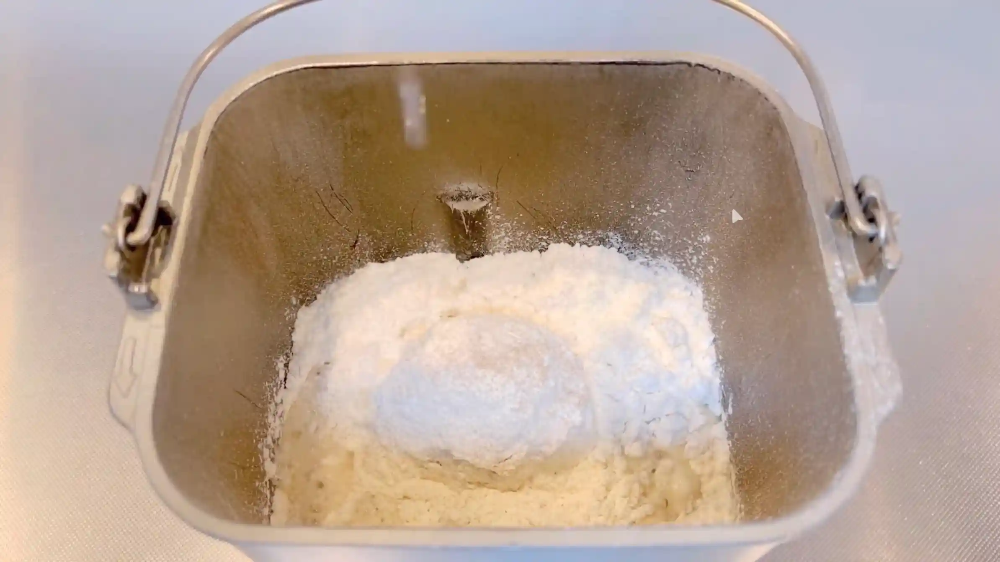
STEP 2
生地を分割し、丸める
生地を15g×6個と85g×4個に分割します。85gの生地はビアリーの土台に、15gの生地は中央のお花部分に使います。それぞれの生地の表面を整えて、丸めておきます。
生地を15g×6個と85g×4個に分割します。85gの生地はビアリーの土台に、15gの生地は中央のお花部分に使います。それぞれの生地の表面を整えて、丸めておきます。
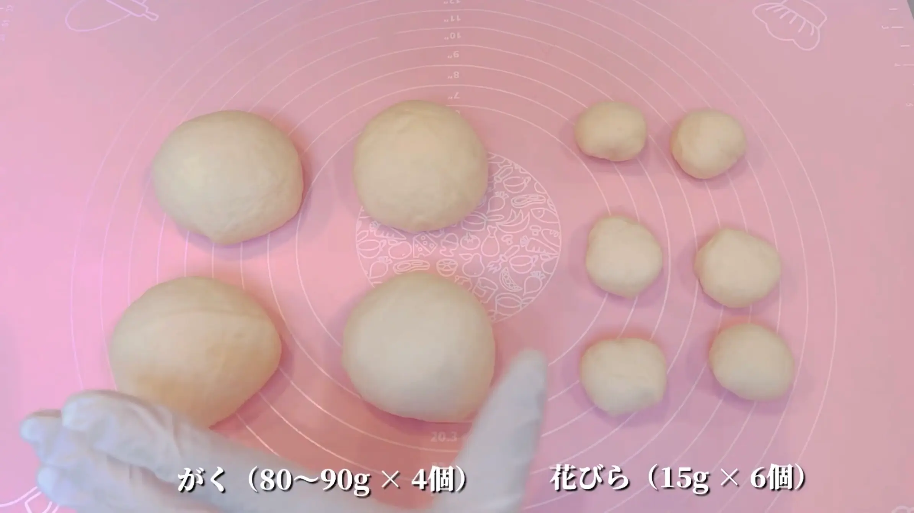
STEP 3
ラップをして、常温で10分おく
生地を休ませることで、生地がゆるみ、次の工程で伸ばしやすくなります。
生地を休ませることで、生地がゆるみ、次の工程で伸ばしやすくなります。
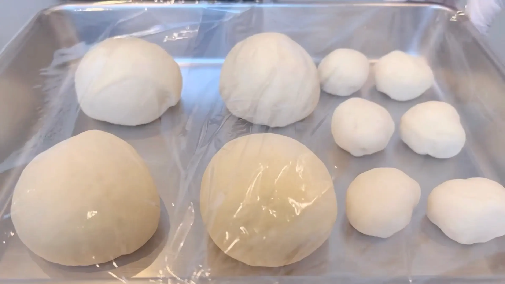
STEP 4
85gの生地を平らに広げる
生地を手で押さえながら、中心から外側へ向かって少しずつ広げます。
生地を手で押さえながら、中心から外側へ向かって少しずつ広げます。
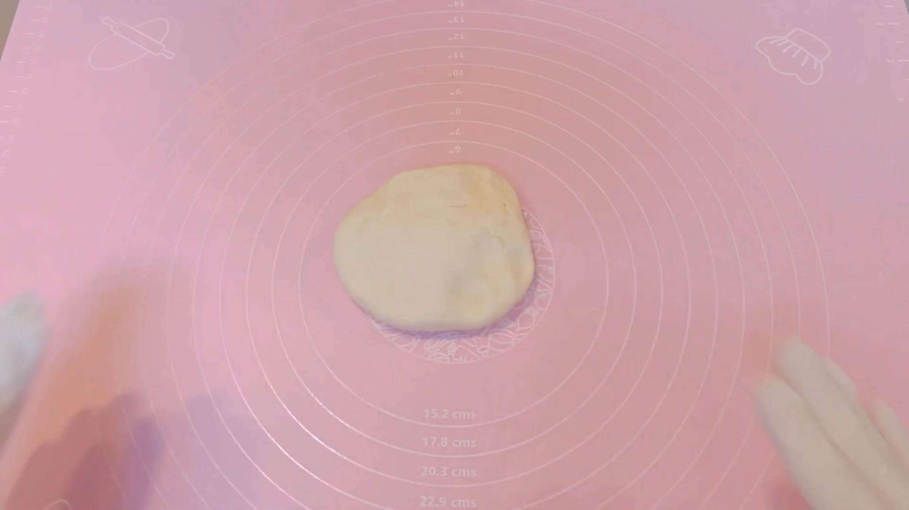
STEP 5
生地の上下を折り畳む
生地の上下を折り畳み、棒状に成形しやすい形に整えます。
生地の上下を折り畳み、棒状に成形しやすい形に整えます。
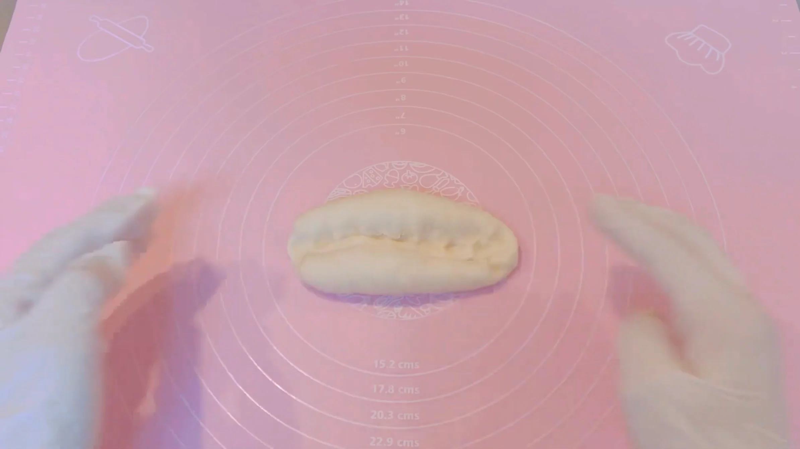
STEP 6
生地の両端をつまんで閉じる
折り畳んだ生地の合わせ目が開かないよう、両端をしっかりつまんで閉じます。
折り畳んだ生地の合わせ目が開かないよう、両端をしっかりつまんで閉じます。
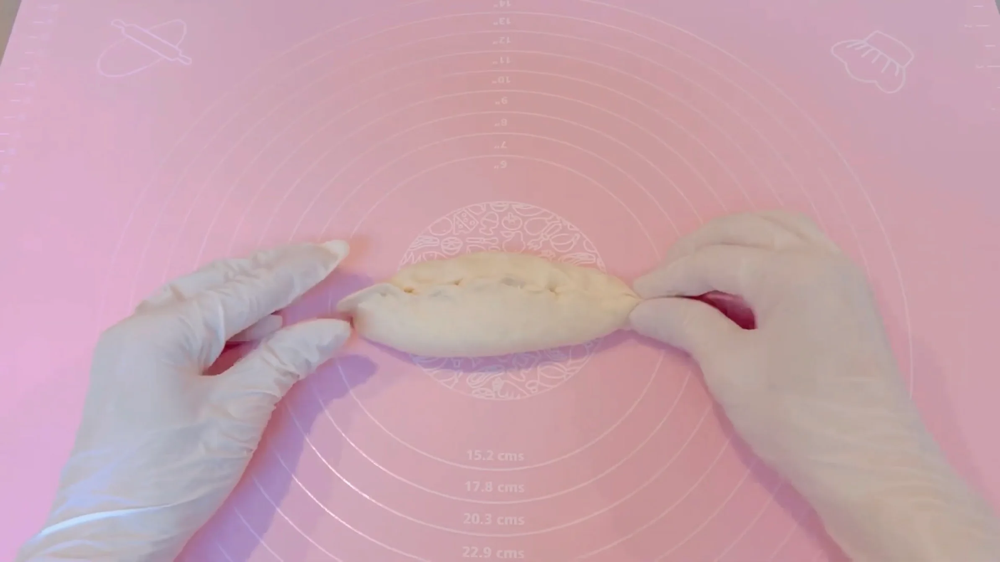
STEP 7
生地を50㎝に伸ばす
生地を少しずつ転がしながら伸ばし、50㎝ほどの長さに整えます。利き手に力が入りやすく、生地が細くなりがちなので、なるべく両手に均一に力を入れ、ゆっくり伸ばしていくのがポイントです。
生地を少しずつ転がしながら伸ばし、50㎝ほどの長さに整えます。利き手に力が入りやすく、生地が細くなりがちなので、なるべく両手に均一に力を入れ、ゆっくり伸ばしていくのがポイントです。
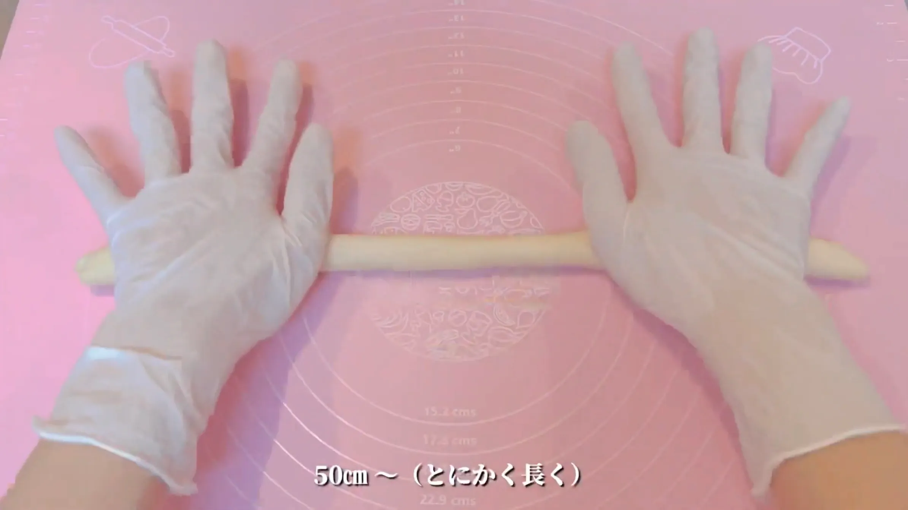
STEP 8
生地を巻き込んでリング状に成形する（[動画 05:06]）
生地を巻き込みながらリング状に整えます。巻き終わりは生地同士をしっかりつなぎ、焼成中にリングが開かないように閉じておきます。
生地を巻き込みながらリング状に整えます。巻き終わりは生地同士をしっかりつなぎ、焼成中にリングが開かないように閉じておきます。
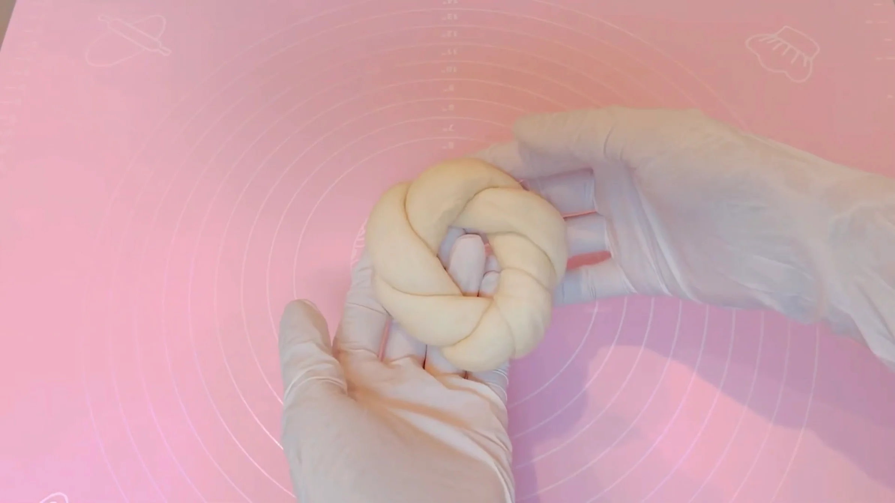
STEP 9
15gの生地を半分に分割する（[動画 05:32]）
15gの生地をそれぞれ半分にし、生地を12個に分けます。
15gの生地をそれぞれ半分にし、生地を12個に分けます。
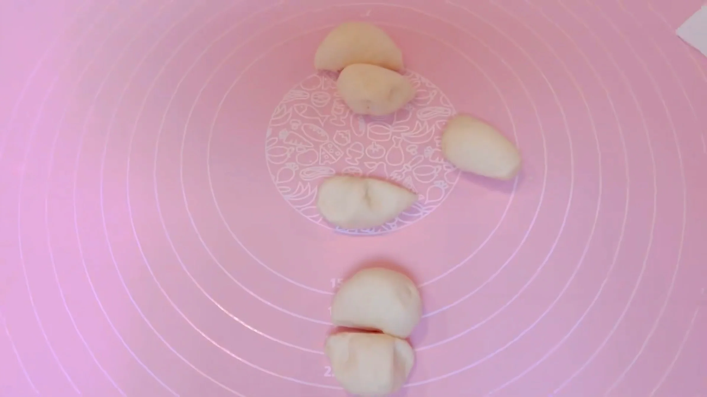
STEP 10
分けた生地を5㎝に伸ばし、重ねて置く（[動画 06:01]）
分割した生地を5㎝ほどの楕円に伸ばし、6枚を少しずつ重ねて並べます。
分割した生地を5㎝ほどの楕円に伸ばし、6枚を少しずつ重ねて並べます。
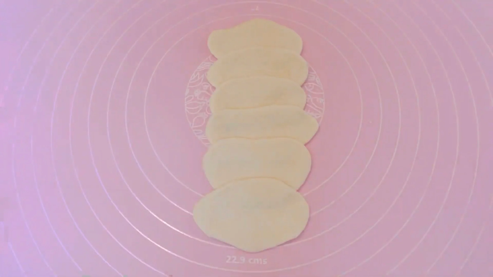
STEP 11
生地を巻く（[動画 06:17]）
重ねた生地を手前から巻きます。
重ねた生地を手前から巻きます。
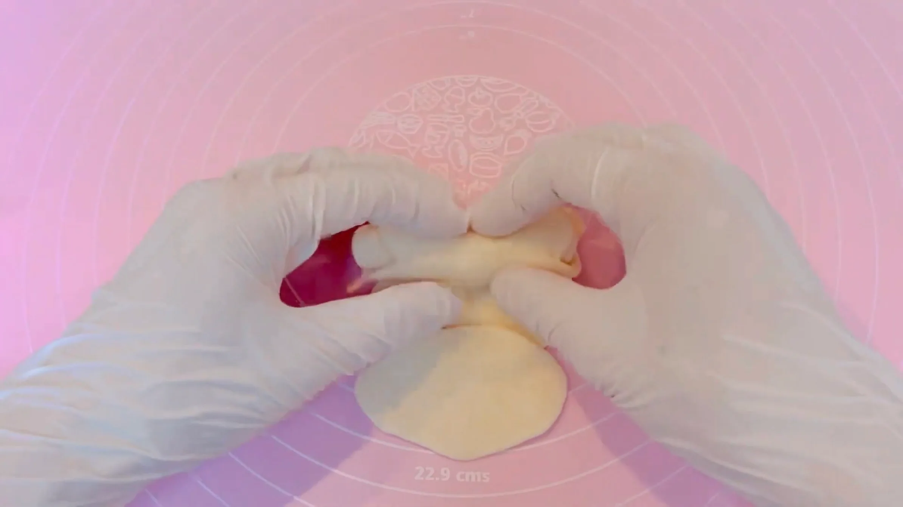
STEP 12
半分に切ってお花を作る（[動画 06:29]）
巻いた生地を中央で半分に切り分けます。重ねた生地が花びらのように開き、お花の形になります。これを計4つ作ります。
巻いた生地を中央で半分に切り分けます。重ねた生地が花びらのように開き、お花の形になります。これを計4つ作ります。
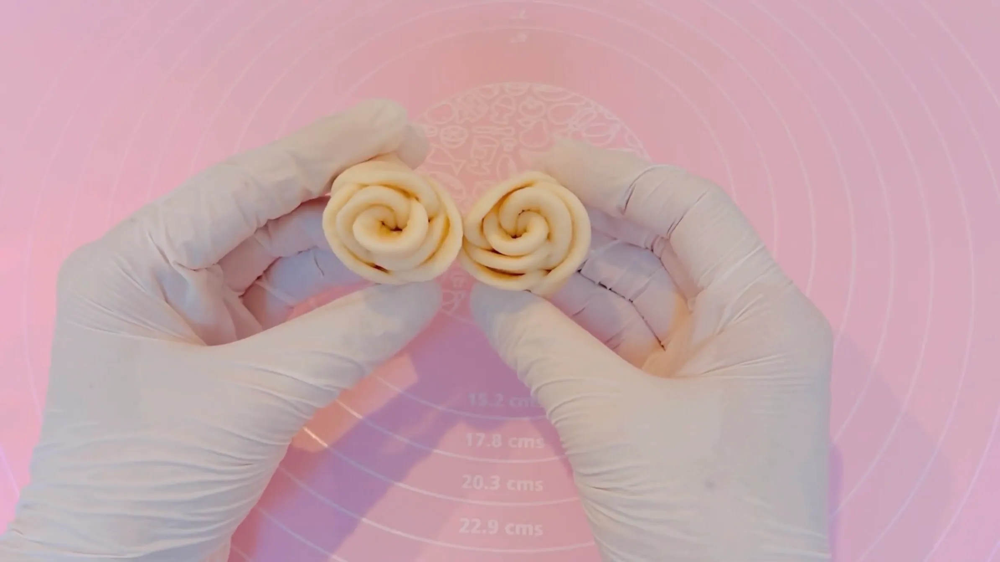
STEP 13
リング状の生地にたっぷり霧吹きをする
ビアリーはベーグルと同じくニューヨーク発祥のパンですが、ベーグルのように生地を茹でず、そのまま焼くのが特徴です。焼成前に生地へたっぷり霧吹きをすることで、表面が乾きすぎるのを防ぎ、焼き上がりの食感を整えます。
ビアリーはベーグルと同じくニューヨーク発祥のパンですが、ベーグルのように生地を茹でず、そのまま焼くのが特徴です。焼成前に生地へたっぷり霧吹きをすることで、表面が乾きすぎるのを防ぎ、焼き上がりの食感を整えます。
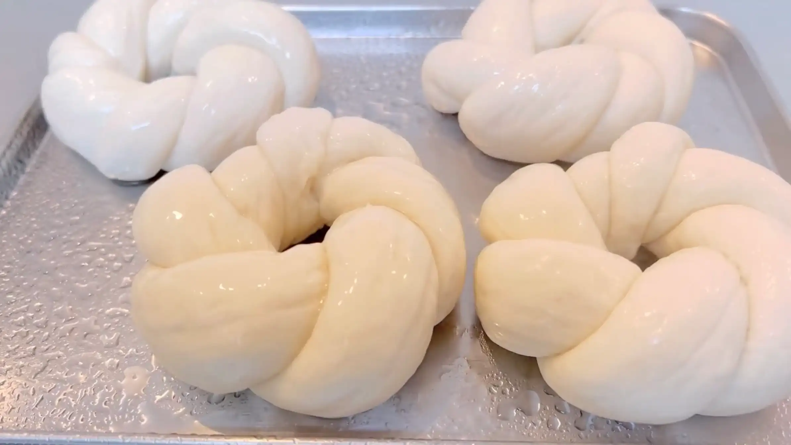
STEP 14
たっぷりゴマをまぶし、天板にのせる
霧吹きをした生地にゴマをたっぷりまぶします。
霧吹きをした生地にゴマをたっぷりまぶします。
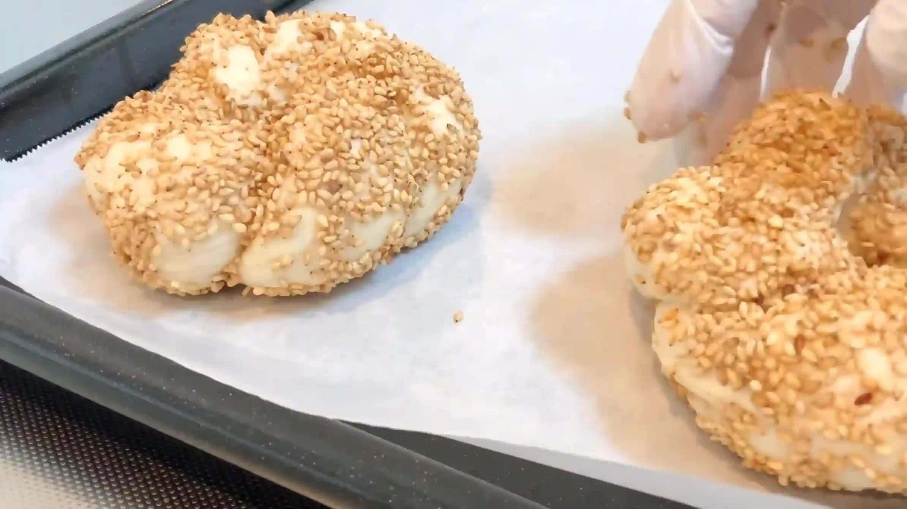
STEP 15
真ん中にお花生地を入れ、牛乳を塗る
リングの中央にお花の生地を置き、お花部分にだけ牛乳を薄く塗ります。牛乳を塗ることで、お花部分に焼き色がつき、リングとの色の違いも楽しめます。
リングの中央にお花の生地を置き、お花部分にだけ牛乳を薄く塗ります。牛乳を塗ることで、お花部分に焼き色がつき、リングとの色の違いも楽しめます。
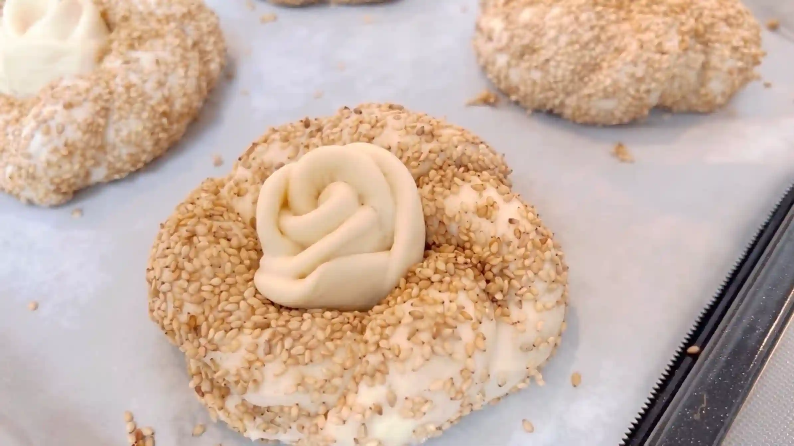
STEP 16
予熱したオーブン200℃で25分焼く
焼成中は表面の焼き色を確認しながら焼き上げます。焼き時間や温度は目安とし、ご家庭のオーブンに合わせて調整してください。
焼成中は表面の焼き色を確認しながら焼き上げます。焼き時間や温度は目安とし、ご家庭のオーブンに合わせて調整してください。
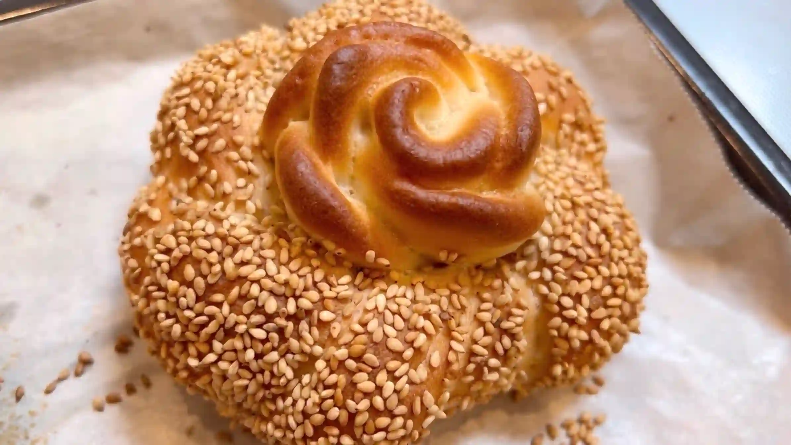
動画でチェック
おいしく作るためのワンポイントコラム
アメリカ・ニューヨークでベーグルと並んで愛されている伝統パン『ビアリー』。見た目はベーグルそっくりですが、お湯で茹でる工程がなく、中央にくぼみを作って刻み玉ねぎやポピーシードを詰めて焼くのが伝統的なスタイルです。今回はその特徴的な凹み部分を、華やかな「お花型」にアレンジしてみました！独特のぎゅっと詰まった食感はそのままに、可愛く仕上げるための「3つのコツ」をご紹介します。
① 伸ばしやすくする生地のコツ
今回はお花を作るために、生地を約50cmと細長く伸ばしていく必要があります。このとき、分割したあとラップをして10分間しっかりとベンチタイムをとるのがポイント。こうすることで、生地の緊張が緩んで素直に伸びるようになり、引っ張ってちぎれたり、縮んでしまったりするのを防ぎます。
② 簡単可愛いお花成形のコツ
真ん中のバラのような花びらは、小さな生地を人差し指ほどの長さに伸ばし、6枚少しずつずらしながら重ねてくるくると巻いて作ります。これを真ん中で半分にカットすることで、2つの可愛いお花が完成します。難しい工程に見えますが、実際にやってみるとすごく簡単。適当にくるくる巻くだけで良い感じのお花になるので、ぜひ挑戦してみてください。
③ ハリとツヤを出す焼成のコツ
今回はお湯で茹でない代わりに、焼く直前に生地全体へ霧吹きをたっぷりとかけるのがポイントです。表面に水分を行き渡らせることで、オーブンの中で生地が早く焼き固まってしまうのを防ぎ、茹でたときのような独特のクラスト（皮）のハリと綺麗な焼き色を引き出す効果があります。
本場の素朴な良さを活かしつつ、テーブルが一気に華やかになるお花型アレンジ。いつもとは一味違うニューヨークの伝統パン作り、ぜひおうちで楽しんでみてください！
① 伸ばしやすくする生地のコツ
今回はお花を作るために、生地を約50cmと細長く伸ばしていく必要があります。このとき、分割したあとラップをして10分間しっかりとベンチタイムをとるのがポイント。こうすることで、生地の緊張が緩んで素直に伸びるようになり、引っ張ってちぎれたり、縮んでしまったりするのを防ぎます。
② 簡単可愛いお花成形のコツ
真ん中のバラのような花びらは、小さな生地を人差し指ほどの長さに伸ばし、6枚少しずつずらしながら重ねてくるくると巻いて作ります。これを真ん中で半分にカットすることで、2つの可愛いお花が完成します。難しい工程に見えますが、実際にやってみるとすごく簡単。適当にくるくる巻くだけで良い感じのお花になるので、ぜひ挑戦してみてください。
③ ハリとツヤを出す焼成のコツ
今回はお湯で茹でない代わりに、焼く直前に生地全体へ霧吹きをたっぷりとかけるのがポイントです。表面に水分を行き渡らせることで、オーブンの中で生地が早く焼き固まってしまうのを防ぎ、茹でたときのような独特のクラスト（皮）のハリと綺麗な焼き色を引き出す効果があります。
本場の素朴な良さを活かしつつ、テーブルが一気に華やかになるお花型アレンジ。いつもとは一味違うニューヨークの伝統パン作り、ぜひおうちで楽しんでみてください！


お湯で茹でずに焼くベーグル、アメリカ・ニューヨークの伝統パン『ビアリー』のレシピです。発酵時間を短く抑えたぎゅっと詰まった食感に、華やかなお花型の成形を組み合わせます。コラムでは「伸ばしやすくする生地のコツ」「簡単可愛いお花成形のコツ」「ハリとツヤを出す焼成のコツ」の3つのポイントをご紹介します。